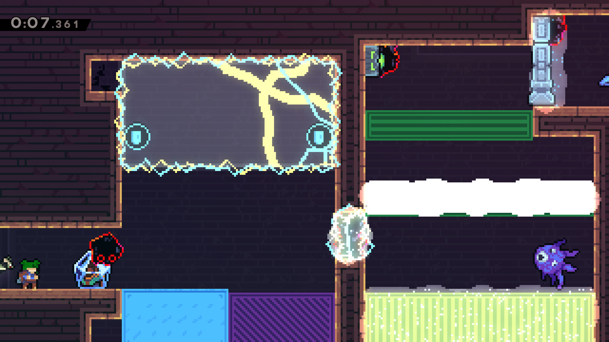
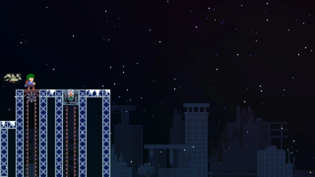
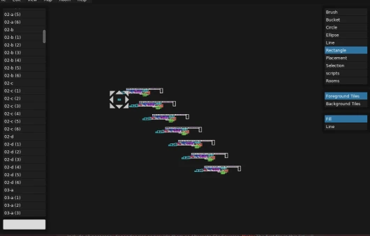
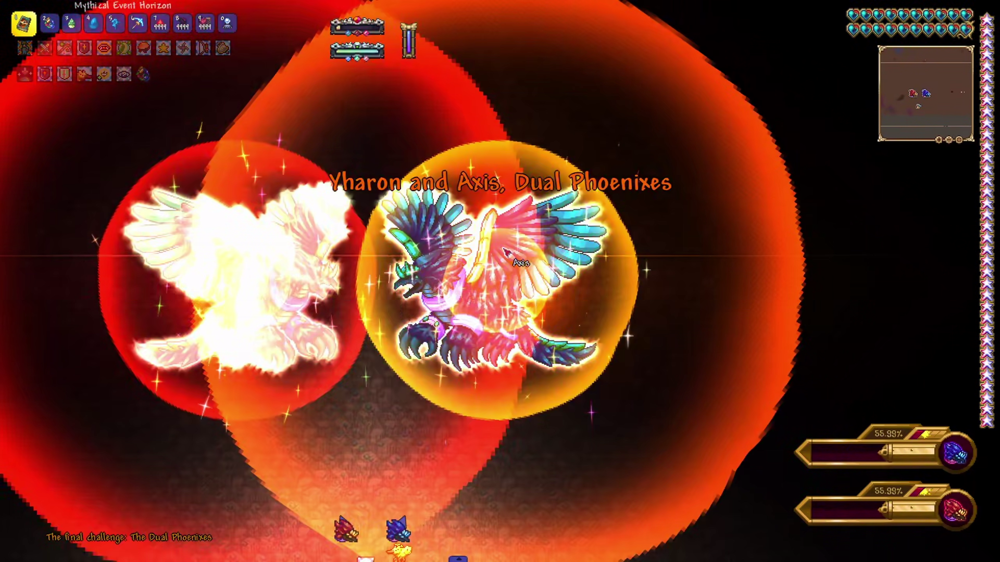
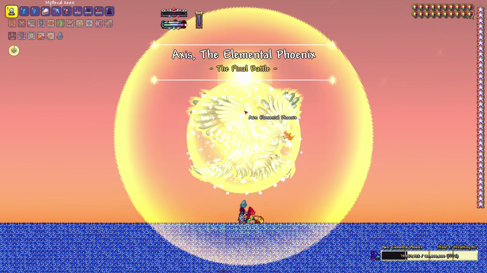
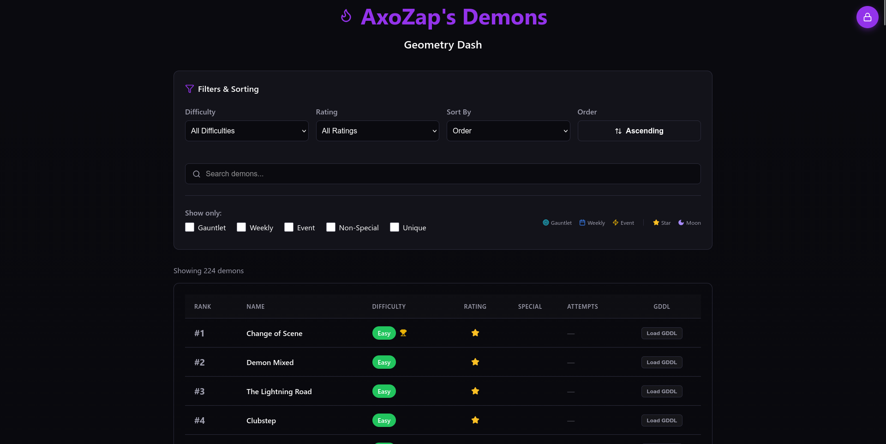
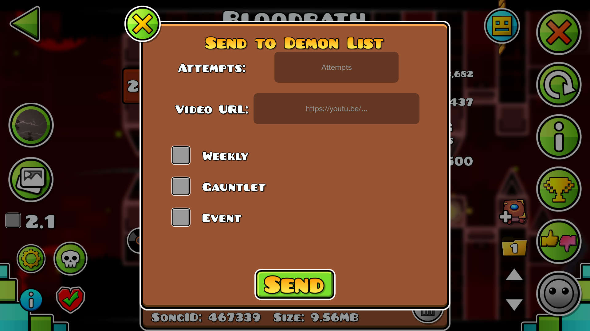

This section will go into detail about side development projects I have throughout a few different video games that I play

Endless Ascension is a mod that takes the original Celeste maps and makes you do them over and over again. With the help of Axo Helper, the main level rooms were copied over and over and have new unique strawberries, mini berries, and heart/moon berries.
Game Banana Endless Ascension
Celeste Seek takes the original Celeste maps, and applies the madhunt concept to it. After selecting a level in the lobby, you can go into it and play hide and seek tag with your friends around the level! Includes custom levels as well
Game Banana Celeste Seek
AxoHelper is a helper mod designed for Endless Ascension. It allows some bulk actions, using the Brokemia Helper Scripts but reimagined. It allows bulk copy, bulk paste, and bulk delete based on ID.
In Terraria, I created a mod called Dual Phoenixes, designed around the Yharon fight in Infernum Calamity

Dual Phoenixes was planned to create a 2nd phoenixes during the fight, which I named Axis. The point of the fight was to be my "Final Yharon Challenge" since I have done the fight hitless.
With the help of Gemini, I created a mod that added a new phoenixes, new phases, as well as a desperation phase. This fight was named Dual Phoenixes and was intended to be a buffed version of the original Yharon fight in Infernum.
After a while I got bored and decided that Axis should have his own fight, with this fight being after the final boss in Calamity.
This fight was harder to create, due to it being a unique fight and not a changed Yharon Infernum Fight.
After a long development, I finished a 12 phase fight against Axis, The Elemental Phoenix, with some aspects relating to the original fight but intended to be a new challenge for me to eventually take on.

The final big development I want to talk about is my "AxoZap Demons" website that I use to store what demons I beat in Geometry Dash.
Hosted at my website is a showcase of all the demons that I have beat in Geometry dash. Using Figma, I created a prototype that I expanded with myself and with the help of Gemini. This website would link to my Google Sheet and track demons between them, with me adding them, similar to Pointercrate.
After a long development, the website works, and with a Cloudflare hosting and backend D1 database and worker, the website tracks all of my demons, while also allowing me to edit or add more. Another feature is a geode mod for in game that directly sends a request and adds the demon to the website.
It has features such as rating type, special type, attempts, GDDL link, difficulty, and sorting and searching based on these criteria points.

Demons Website

In-Game Demon Mod